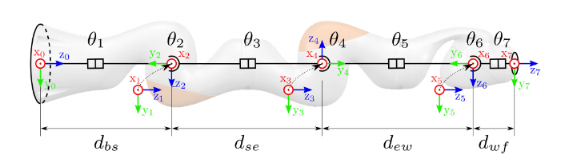

Nichols Crawford Taylor
Kinematics
Kinematics in general refers to the motion of bodies in physics. In robotics we're interested in the kinematics of a robot, or the motion of the links and joints of a robot arm. I'll writie about forward kinematics, where we're interested in how the joint angles of a robot arm affect the position and velocity of the end of the arm. Also inverse kinematics, which is given an end position for the arm how the joint angles of the robot should be configured.
This is a model of a KUKA iiwa robot arm. It's got 7 degrees of freedom, and I can control its joint angles in javascript. However, maybe I'd like to know where that endpoint is in space. What are its coordinates? Well in 1955 Denavit and Hartenberg introduced what is now the standard: DH Parameters/Coordinates.
First, separate your robot into links and joints. Joints are the part of the robot that change (rotate or extend) and links are the links between them. We'll setup a coordinate system at each joint. For revolute joints, there is an axis of rotation which the joint revolves around. For prismatic joints, there is an axis of extension/retraction which the joint moves along. We'll call this axis the joint axis, \(z_i\).
Our numbering scheme is going to be a little skewampus. A joint that connects link \(i-1\) to link \(i\), is joint \(i\). Thus the joint is at the proximal end of the link of the same number. That joint's axis, is \(z_{i-1}\). So, at the end of link \(i-1\) is joint \(i\), and then link \(i\). Joint \(i\), and as a reuslt link \(i\), revolve around (or move along) axis \(z_{i-1}\).
To set up the rest of our coordinate system, we observe that with two exceptions, any two lines in space have a normal between them (i.e. their normalized cross product or the normal to the plane they define). That normal, we'll call \(n_i\). \[ n_i := \frac{z_{i-1} \times z_i}{\|z_{i-1} \times z_i\|} \] The origin \(O_i\) will be the intersection of \(n_i\) and \(z_i\), \(x_i\) will be our x axis, and will be along \(n_i\) pointing from \(z_{i-1}\) to \(z_{i}\). Finally, \(y_i = z_i \times x_i\).
Now, we can measure the DH parameters. Taken from notes from John Hollerbach's intro to robotics class notes (password protected):
"\(\alpha_i\) is the skew angle from \(z_{i-1}\) to \(z_i\), measured about \(x_i\). Note that \(\cos \alpha_i = z_{i-1} \cdot z_i\).
\(d_i\) is the distance from \(x_{i-1}\) to \(x_i\), as measured along \(z_{i-1}\). Note that \(d_i\) can be negative.
\(a_i\) is the distance from \(z_{i-1}\) to \(z_i\), measured along \(x_i\). Note that \(a_i\) is always positive because of the definition of \(x_i\).
\(\theta_i\) is the angle from \(x_{i-1}\) to \(x_i\), measured about \(z_{i-1}\).
For a rotary joint, \(θ_i\) varies and is called the joint angle. For a prismatic joint, \(d_i\) varies and is called the joint displacement."
We can use those parameters to get the homogeneous transformation matrix \(^{i-1}T_i\) from frame \(i\) to frame \(i-1\): \[ ^{i-1}T_i = \begin{bmatrix} \text{cos}(\theta_i) & -\text{sin}(\theta_i) \text{cos}(\alpha_i) & \text{sin}(\theta_i) \text{sin}(\alpha_i) & a_i \text{cos}(\theta_i) \\ \text{sin}(\theta_i) & \text{cos}(\theta_i) \text{cos}(\alpha_i) & -\text{cos}(\theta_i) \text{sin}(\alpha_i) & a_i \text{sin}(\theta_i) \\ 0 & \text{sin}(\alpha_i) & \text{cos}(\alpha_i) & d_i \\ 0 & 0 & 0 & 1 \end{bmatrix} \] We'll use this matrix to transform between each joint! Starting from the origin, we can now calculate the end effector position. Sourcing the DH Parameters from here.
Isn't that something. I also coded up a DH parameter visualization tool. The default is the KUKA iiwa, but it's possible to make arbitrary manipulators. You can see how the iiwa corresponds to the parameters in the figure below, from the same technical report I got the parameters from.
It's a little buggy, so you may need to refresh the page if it starts to act strange. The slider for number of joints also doesn't slide, but it can be clicked or a number entered. I also limited the number of joints to 10, just to make the slider range reasonable.
Inverse kinematics is not quite as simple as forward kinematics. I was taught some methods for inverse kinematics for 6 Degrees of Freedom (DoF) manipulators. Largely, it boils down to figuring it out with some trigonometry for the first three joints (they take care of position) and then apply a solution to correct rotation using the last three. This also works for a relatively specific set of arm structures. Something I'm particularily interested in is 7-DoF manipulator inverse kinematics, which I think is underutilized.
Becasue it's 7-DoF, there are 7 joint angles to solve for. However, a position and rotation in space only have 6 DoF. This means our system will not just have one solution, but a manifold of solutions in configuration space. With our iiwa arm, one way of finding a solution is to make sure our arm is fully parameterized. Our extra degree of freedom can be modeled as a circle of positions our elbow can take, and we can say the angle around that circle our elbow is the arm angle, \(\psi\). We also have the global configuration parameters, which can either be 1 or -1.
And that's foreward kinematics! On to doing it backwards with inverse kinematics.